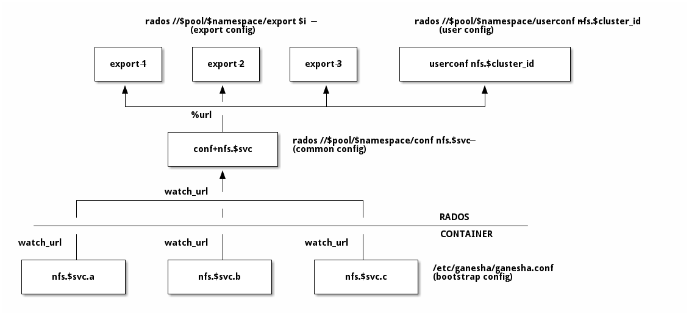

Notice
This document is for a development version of Ceph.
CephFS & RGW Exports over NFS
CephFS namespaces and RGW buckets can be exported over NFS protocol using the NFS-Ganesha NFS server.
The nfs manager module provides a general interface for managing
NFS exports of either CephFS directories or RGW buckets. Exports can
be managed either via the CLI ceph nfs export ... commands
or via the dashboard.
The deployment of the nfs-ganesha daemons can also be managed automatically if either the Cephadm or Rook orchestrators are enabled. If neither are in use (e.g., Ceph is deployed via an external orchestrator like Ansible or Puppet), the nfs-ganesha daemons must be manually deployed; for more information, see Manual Ganesha deployment.
Note
Starting with Ceph Pacific, the nfs mgr module must be enabled.
NFS Cluster management
Create NFS Ganesha Cluster
$ ceph nfs cluster create <cluster_id> [<placement>] [--ingress] [--virtual_ip <value>] [--ingress-mode {default|keepalive-only|haproxy-standard|haproxy-protocol}] [--port <int>]
This creates a common recovery pool for all NFS Ganesha daemons, new user based on
cluster_id, and a common NFS Ganesha config RADOS object.
Note
Since this command also brings up NFS Ganesha daemons using a ceph-mgr orchestrator module (see Orchestrator CLI) such as cephadm or rook, at least one such module must be enabled for it to work.
Currently, NFS Ganesha daemon deployed by cephadm listens on the standard port. So only one daemon will be deployed on a host.
<cluster_id> is an arbitrary string by which this NFS Ganesha cluster will be
known (e.g., mynfs).
<placement> is an optional string signifying which hosts should have NFS Ganesha
daemon containers running on them and, optionally, the total number of NFS
Ganesha daemons on the cluster (should you want to have more than one NFS Ganesha
daemon running per node). For example, the following placement string means
“deploy NFS Ganesha daemons on nodes host1 and host2 (one daemon per host):
"host1,host2"
and this placement specification says to deploy single NFS Ganesha daemon each on nodes host1 and host2 (for a total of two NFS Ganesha daemons in the cluster):
"2 host1,host2"
NFS can be deployed on a port other than 2049 (the default) with --port <port>.
To deploy NFS with a high-availability front-end (virtual IP and load balancer), add the
--ingress flag and specify a virtual IP address. This will deploy a combination
of keepalived and haproxy to provide an high-availability NFS frontend for the NFS
service.
Note
The ingress implementation is not yet complete. Enabling ingress will deploy multiple ganesha instances and balance load across them, but a host failure will not immediately cause cephadm to deploy a replacement daemon before the NFS grace period expires. This high-availability functionality is expected to be completed by the Quincy release (March 2022).
For more details, refer Daemon Placement but keep in mind that specifying the placement via a YAML file is not supported.
Deployment of NFS daemons and the ingress service is asynchronous: the command may return before the services have completely started. You may wish to check that these services do successfully start and stay running. When using cephadm orchestration, these commands check service status:
$ ceph orch ls --service_name=nfs.<cluster_id>
$ ceph orch ls --service_name=ingress.nfs.<cluster_id>
Ingress
The core nfs service will deploy one or more nfs-ganesha daemons, each of which will provide a working NFS endpoint. The IP for each NFS endpoint will depend on which host the nfs-ganesha daemons are deployed. By default, daemons are placed semi-randomly, but users can also explicitly control where daemons are placed; see Daemon Placement.
When a cluster is created with --ingress, an ingress service is
additionally deployed to provide load balancing and high-availability
for the NFS servers. A virtual IP is used to provide a known, stable
NFS endpoint that all clients can use to mount. Ceph will take care
of the details of NFS redirecting traffic on the virtual IP to the
appropriate backend NFS servers, and redeploying NFS servers when they
fail.
An optional --ingress-mode parameter can be provided to choose
how the ingress service is configured:
Setting
--ingress-mode keepalive-onlydeploys a simplified ingress service that provides a virtual IP with the nfs server directly binding to that virtual IP and leaves out any sort of load balancing or traffic redirection. This setup will restrict users to deploying only 1 nfs daemon as multiple cannot bind to the same port on the virtual IP.Setting
--ingress-mode haproxy-standarddeploys a full ingress service to provide load balancing and high-availability using HAProxy and keepalived. Client IP addresses are not visible to the back-end NFS server and IP level restrictions on NFS exports will not function.Setting
--ingress-mode haproxy-protocoldeploys a full ingress service to provide load balancing and high-availability using HAProxy and keepalived. Client IP addresses are visible to the back-end NFS server and IP level restrictions on NFS exports are usable. This mode requires NFS Ganesha version 5.0 or later.Setting
--ingress-mode defaultis equivalent to not providing any other ingress mode by name. When no other ingress mode is specified by name the default ingress mode used ishaproxy-standard.
Ingress can be added to an existing NFS service (e.g., one initially created
without the --ingress flag), and the basic NFS service can
also be modified after the fact to include non-default options, by modifying
the services directly. For more information, see High-availability NFS.
Show NFS Cluster IP(s)
To examine an NFS cluster’s IP endpoints, including the IPs for the individual NFS daemons, and the virtual IP (if any) for the ingress service,
$ ceph nfs cluster info [<cluster_id>]
Note
This will not work with the rook backend. Instead, expose the port with the kubectl patch command and fetch the port details with kubectl get services command:
$ kubectl patch service -n rook-ceph -p '{"spec":{"type": "NodePort"}}' rook-ceph-nfs-<cluster-name>-<node-id>
$ kubectl get services -n rook-ceph rook-ceph-nfs-<cluster-name>-<node-id>
Delete NFS Ganesha Cluster
$ ceph nfs cluster rm <cluster_id>
This deletes the deployed cluster.
Removal of NFS daemons and the ingress service is asynchronous: the command may return before the services have been completely deleted. You may wish to check that these services are no longer reported. When using cephadm orchestration, these commands check service status:
$ ceph orch ls --service_name=nfs.<cluster_id>
$ ceph orch ls --service_name=ingress.nfs.<cluster_id>
Updating an NFS Cluster
In order to modify cluster parameters (like the port or placement), you need to
use the orchestrator interface to update the NFS service spec. The safest way to do
that is to export the current spec, modify it, and then re-apply it. For example,
to modify the nfs.foo service,
$ ceph orch ls --service-name nfs.foo --export > nfs.foo.yaml
$ vi nfs.foo.yaml
$ ceph orch apply -i nfs.foo.yaml
For more information about the NFS service spec, see NFS Service.
List NFS Ganesha Clusters
$ ceph nfs cluster ls
This lists deployed clusters.
Set Customized NFS Ganesha Configuration
$ ceph nfs cluster config set <cluster_id> -i <config_file>
With this the nfs cluster will use the specified config and it will have precedence over default config blocks.
Example use cases include:
Changing log level. The logging level can be adjusted with the following config fragment:
LOG { COMPONENTS { ALL = FULL_DEBUG; } }
Adding custom export block.
The following sample block creates a single export. This export will not be managed by ceph nfs export interface:
EXPORT { Export_Id = 100; Transports = TCP; Path = /; Pseudo = /ceph/; Protocols = 4; Access_Type = RW; Attr_Expiration_Time = 0; Squash = None; FSAL { Name = CEPH; Filesystem = "filesystem name"; User_Id = "user id"; Secret_Access_Key = "secret key"; } }
Note
User specified in FSAL block should have proper caps for NFS-Ganesha daemons to access ceph cluster. User can be created in following way using auth get-or-create:
# ceph auth get-or-create client.<user_id> mon 'allow r' osd 'allow rw pool=.nfs namespace=<nfs_cluster_name>, allow rw tag cephfs data=<fs_name>' mds 'allow rw path=<export_path>'
View Customized NFS Ganesha Configuration
$ ceph nfs cluster config get <cluster_id>
This will output the user defined configuration (if any).
Reset NFS Ganesha Configuration
$ ceph nfs cluster config reset <cluster_id>
This removes the user defined configuration.
Note
With a rook deployment, ganesha pods must be explicitly restarted for the new config blocks to be effective.
Export Management
Warning
Currently, the nfs interface is not integrated with dashboard. Both dashboard and nfs interface have different export requirements and create exports differently. Management of dashboard created exports is not supported.
Create CephFS Export
$ ceph nfs export create cephfs --cluster-id <cluster_id> --pseudo-path <pseudo_path> --fsname <fsname> [--readonly] [--path=/path/in/cephfs] [--client_addr <value>...] [--squash <value>] [--sectype <value>...] [--cmount_path <value>]
This creates export RADOS objects containing the export block, where
<cluster_id> is the NFS Ganesha cluster ID.
<pseudo_path> is the export position within the NFS v4 Pseudo Filesystem where the export will be available on the server. It must be an absolute path and unique.
<fsname> is the name of the FS volume used by the NFS Ganesha cluster
that will serve this export.
<path> is the path within cephfs. Valid path should be given and default
path is ‘/’. It need not be unique. Subvolume path can be fetched using:
$ ceph fs subvolume getpath <vol_name> <subvol_name> [--group_name <subvol_group_name>]
<client_addr> is the list of client address for which these export
permissions will be applicable. By default all clients can access the export
according to specified export permissions. See the NFS-Ganesha Export Sample
for permissible values.
<squash> defines the kind of user id squashing to be performed. The default
value is no_root_squash. See the NFS-Ganesha Export Sample for
permissible values.
<sectype> specifies which authentication methods will be used when
connecting to the export. Valid values include “krb5p”, “krb5i”, “krb5”, “sys”,
and “none”. More than one value can be supplied. The flag may be specified
multiple times (example: --sectype=krb5p --sectype=krb5i) or multiple
values may be separated by a comma (example: --sectype krb5p,krb5i). The
server will negotatiate a supported security type with the client preferring
the supplied methods left-to-right.
<cmount_path> specifies the path within the CephFS to mount this export on. It is
allowed to be any complete path hierarchy between / and the EXPORT {path}. (i.e. if EXPORT { Path } parameter is /foo/bar then cmount_path could be /, /foo or /foo/bar).
Note
If this and the other EXPORT { FSAL {} } options are the same between multiple exports, those exports will share a single CephFS client.
If not specified, the default is /.
Note
Specifying values for sectype that require Kerberos will only function on servers that are configured to support Kerberos. Setting up NFS-Ganesha to support Kerberos can be found here Kerberos setup for NFS Ganesha in Ceph.
Note
Export creation is supported only for NFS Ganesha clusters deployed using nfs interface.
Create RGW Export
There are two kinds of RGW exports:
a user export will export all buckets owned by an RGW user, where the top-level directory of the export is a list of buckets.
a bucket export will export a single bucket, where the top-level directory contains the objects in the bucket.
RGW bucket export
To export a bucket:
$ ceph nfs export create rgw --cluster-id <cluster_id> --pseudo-path <pseudo_path> --bucket <bucket_name> [--user-id <user-id>] [--readonly] [--client_addr <value>...] [--squash <value>] [--sectype <value>...]
For example, to export mybucket via NFS cluster mynfs at the pseudo-path /bucketdata to any host in the 192.168.10.0/24 network
$ ceph nfs export create rgw --cluster-id mynfs --pseudo-path /bucketdata --bucket mybucket --client_addr 192.168.10.0/24
Note
Export creation is supported only for NFS Ganesha clusters deployed using nfs interface.
<cluster_id> is the NFS Ganesha cluster ID.
<pseudo_path> is the export position within the NFS v4 Pseudo Filesystem where the export will be available on the server. It must be an absolute path and unique.
<bucket_name> is the name of the bucket that will be exported.
<user_id> is optional, and specifies which RGW user will be used for read and write
operations to the bucket. If it is not specified, the user who owns the bucket will be
used.
Note
Currently, if multi-site RGW is enabled, Ceph can only export RGW buckets in the default realm.
<client_addr> is the list of client address for which these export
permissions will be applicable. By default all clients can access the export
according to specified export permissions. See the NFS-Ganesha Export Sample
for permissible values.
<squash> defines the kind of user id squashing to be performed. The default
value is no_root_squash. See the NFS-Ganesha Export Sample for
permissible values.
<sectype> specifies which authentication methods will be used when
connecting to the export. Valid values include “krb5p”, “krb5i”, “krb5”, “sys”,
and “none”. More than one value can be supplied. The flag may be specified
multiple times (example: --sectype=krb5p --sectype=krb5i) or multiple
values may be separated by a comma (example: --sectype krb5p,krb5i). The
server will negotatiate a supported security type with the client preferring
the supplied methods left-to-right.
Note
Specifying values for sectype that require Kerberos will only function on servers that are configured to support Kerberos. Setting up NFS-Ganesha to support Kerberos is outside the scope of this document.
RGW user export
To export an RGW user:
$ ceph nfs export create rgw --cluster-id <cluster_id> --pseudo-path <pseudo_path> --user-id <user-id> [--readonly] [--client_addr <value>...] [--squash <value>]
For example, to export myuser via NFS cluster mynfs at the pseudo-path /myuser to any host in the 192.168.10.0/24 network
$ ceph nfs export create rgw --cluster-id mynfs --pseudo-path /bucketdata --user-id myuser --client_addr 192.168.10.0/24
Delete Export
$ ceph nfs export rm <cluster_id> <pseudo_path>
This deletes an export in an NFS Ganesha cluster, where:
<cluster_id> is the NFS Ganesha cluster ID.
<pseudo_path> is the pseudo root path (must be an absolute path).
List Exports
$ ceph nfs export ls <cluster_id> [--detailed]
It lists exports for a cluster, where:
<cluster_id> is the NFS Ganesha cluster ID.
With the --detailed option enabled it shows entire export block.
Get Export
$ ceph nfs export info <cluster_id> <pseudo_path>
This displays export block for a cluster based on pseudo root name, where:
<cluster_id> is the NFS Ganesha cluster ID.
<pseudo_path> is the pseudo root path (must be an absolute path).
Create or update export via JSON specification
An existing export can be dumped in JSON format with:
ceph nfs export info *<cluster_id>* *<pseudo_path>*
An export can be created or modified by importing a JSON description in the same format:
ceph nfs export apply *<cluster_id>* -i <json_file>
For example,:
$ ceph nfs export info mynfs /cephfs > update_cephfs_export.json
$ cat update_cephfs_export.json
{
"export_id": 1,
"path": "/",
"cluster_id": "mynfs",
"pseudo": "/cephfs",
"access_type": "RW",
"squash": "no_root_squash",
"security_label": true,
"protocols": [
4
],
"transports": [
"TCP"
],
"fsal": {
"name": "CEPH",
"fs_name": "a",
"sec_label_xattr": "",
"cmount_path": "/"
},
"clients": []
}
The imported JSON can be a single dict describing a single export, or a JSON list containing multiple export dicts.
The exported JSON can be modified and then reapplied. Below, pseudo and access_type are modified. When modifying an export, the provided JSON should fully describe the new state of the export (just as when creating a new export), with the exception of the authentication credentials, which will be carried over from the previous state of the export where possible.
!! NOTE: The user_id in the fsal block should not be modified or mentioned in the JSON file as it is auto-generated for CephFS exports.
It’s auto-generated in the format nfs.<cluster_id>.<fs_name>.<hash_id>.
$ ceph nfs export apply mynfs -i update_cephfs_export.json
$ cat update_cephfs_export.json
{
"export_id": 1,
"path": "/",
"cluster_id": "mynfs",
"pseudo": "/cephfs_testing",
"access_type": "RO",
"squash": "no_root_squash",
"security_label": true,
"protocols": [
4
],
"transports": [
"TCP"
],
"fsal": {
"name": "CEPH",
"fs_name": "a",
"sec_label_xattr": "",
"cmount_path": "/"
},
"clients": []
}
An export can also be created or updated by injecting a Ganesha NFS EXPORT config fragment. For example,:
$ ceph nfs export apply mynfs -i update_cephfs_export.conf
$ cat update_cephfs_export.conf
EXPORT {
FSAL {
name = "CEPH";
filesystem = "a";
}
export_id = 1;
path = "/";
pseudo = "/a";
access_type = "RW";
squash = "none";
attr_expiration_time = 0;
security_label = true;
protocols = 4;
transports = "TCP";
}
Mounting
After the exports are successfully created and NFS Ganesha daemons are deployed, exports can be mounted with:
$ mount -t nfs <ganesha-host-name>:<pseudo_path> <mount-point>
For example, if the NFS cluster was created with --ingress --virtual-ip 192.168.10.10
and the export’s pseudo-path was /foo, the export can be mounted at /mnt with:
$ mount -t nfs 192.168.10.10:/foo /mnt
If the NFS service is running on a non-standard port number:
$ mount -t nfs -o port=<ganesha-port> <ganesha-host-name>:<ganesha-pseudo_path> <mount-point>
Note
Only NFS v4.0+ is supported.
Note
As of this writing (01 Jan 2024), no version of Microsoft Windows supports mouting an NFS v4.x export natively.
Troubleshooting
Checking NFS-Ganesha logs with
cephadm: The NFS daemons can be listed with:$ ceph orch ps --daemon-type nfs
You can via the logs for a specific daemon (e.g.,
nfs.mynfs.0.0.myhost.xkfzal) on the relevant host with:# cephadm logs --fsid <fsid> --name nfs.mynfs.0.0.myhost.xkfzalrook:$ kubectl logs -n rook-ceph rook-ceph-nfs-<cluster_id>-<node_id> nfs-ganesha
The NFS log level can be adjusted using nfs cluster config set command (see Set Customized NFS Ganesha Configuration).
Manual Ganesha deployment
It may be possible to deploy and manage the NFS ganesha daemons without orchestration frameworks such as cephadm or rook.
Note
Manual configuration is not tested or fully documented; your mileage may vary. If you make this work, please help us by updating this documentation.
Limitations
If no orchestrator module is enabled for the Ceph Manager the NFS cluster
management commands, such as those starting with ceph nfs cluster, will not
function. However, commands that manage NFS exports, like those prefixed with
ceph nfs export are expected to work as long as the necessary RADOS objects
have already been created. The exact RADOS objects required are not documented
at this time as support for this feature is incomplete. A curious reader can
find some details about the object by reading the source code for the
mgr/nfs module (found in the ceph source tree under
src/pybind/mgr/nfs).
Requirements
The following packages are required to enable CephFS and RGW exports with nfs-ganesha:
nfs-ganesha,nfs-ganesha-ceph,nfs-ganesha-rados-graceandnfs-ganesha-rados-urlspackages (version 3.3 and above)
Ganesha Configuration Hierarchy
Cephadm and rook start each nfs-ganesha daemon with a minimal
bootstrap configuration file that pulls from a shared common
configuration stored in the .nfs RADOS pool and watches the common
config for changes. Each export is written to a separate RADOS object
that is referenced by URL from the common config.

Brought to you by the Ceph Foundation
The Ceph Documentation is a community resource funded and hosted by the non-profit Ceph Foundation. If you would like to support this and our other efforts, please consider joining now.